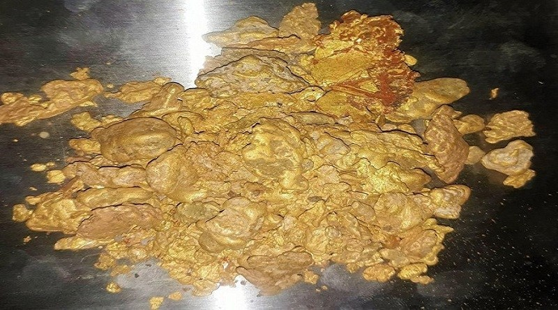
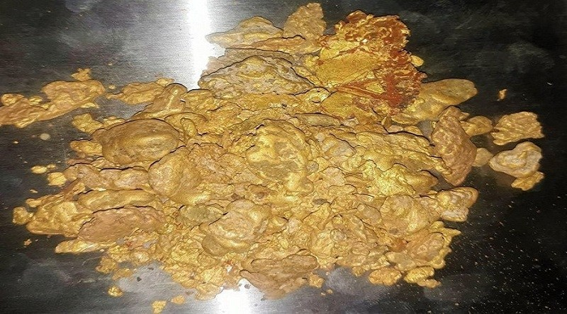

Welcome to Somaliland

Untapped and unexploited deposits include gold, anhydrite, bauxite, columbite, copper, feldspar, iron ore, kaolin, quartz, silica sand, tantalum, thorium, tin and uranium,emerald,ruby,sapphire,opal.
Somaliland is endowed with mineral resources, and many world-class deposits have been discovered there in recent years.
The Northeast of Sanaag region of Somaliland is a key source of Gold.
 

The northwestern Awdal region of Somaliland is a key source of emerald.
Click here to view Simodi Hills, Awdal, SomalilandMining-Kalil&ZAK holds: